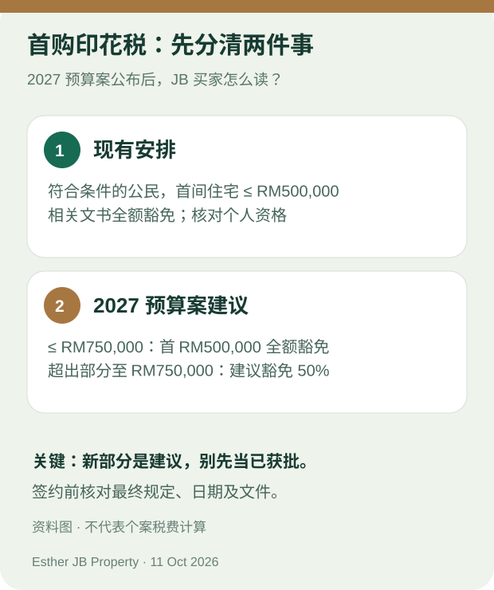

新山买家指南 · 资料核对：2026 年 10 月 11 日
2027 预算案：在 JB 买第一间房，要等明年吗？
不一定。如果你是马来西亚公民、正在新山买第一间住宅，先看你的目标房价和预计签约日期。现有安排已经涵盖符合条件、价格不超过 RM500,000 的首购住宅；2027 预算案则建议延续这项安排，并为不超过 RM750,000 的首购住宅加入分段印花税豁免。预算案建议不等于个案已获豁免，也不代表房价或贷款会改变。财政部《2027 预算案税务措施》附件 16

原创资料图；按 2026 年 10 月 11 日财政部文件整理。图中“建议”并非已经适用于每笔交易。
先分清：现有安排和新建议
财政部文件列明，现行的首购住宅印花税全额豁免，适用于符合条件的马来西亚公民购买价格不超过 RM500,000 的第一间住宅，涉及贷款协议和产权转让文书；所列买卖协议日期范围为 2021 年 1 月 1 日至 2027 年 12 月 31 日。也就是说，符合现行条件的 RM500,000 以下买家，不需要只为了等“2027 新政策”而停止看房。签约前仍须由处理交易的专业人士按正式文件核对资格。财政部税务措施附件 16
同一份文件提出的新建议是：继续给予不超过 RM500,000 的首购住宅相关文书全额豁免；对价格不超过 RM750,000 的首购住宅，首 RM500,000 部分建议全额豁免，超过 RM500,000 至 RM750,000 的部分建议豁免 50%。建议涉及 2027 年 1 月 1 日至 2030 年 12 月 31 日签订的买卖协议。这是预算案建议；实际适用范围、文件和计算，应以实施时的正式规定及个案审核为准。财政部税务措施附件 16
在 JB 看房，怎样把消息用在自己的决定？
**第一，写下真实预算，而非只看豁免门槛。**例如你比较 RM480,000 和 RM620,000 的两套住宅，不应因为后者可能符合新建议，就忽略两者的首期、月供、管理费、装修和日常交通开支。印花税只是买房成本的一部分；本文不替任何个案计算可节省金额。
第二，把预计签约日期和资格分开核对。“现在看房”“预订单位”和“签订买卖协议”不是同一件事。若你正在考虑 RM500,000 以上、RM750,000 以下的住宅，先请律师或处理印花税的专业人士核对最终规定与文件，不要在销售预算里预先扣掉一笔尚未确认的优惠。
**第三，比较房子本身。**新公寓要看实际户型、管理费与停车；有地住宅要看空间、土地与维修需要。两种住宅都不能只凭“在优惠价格范围内”作决定。你仍要问：这套房适合我住吗？总支出在我能承受的范围内吗？关键资料能书面核对吗？
预算案也提到 SJKP 住房融资担保最高 RM200 亿，目标支持首购者，尤其包括没有固定收入的自雇人士。融资担保不等于个人贷款获批，也不等于零首期；申请资格和银行条件必须按个人及房屋情况确认。首相 2027 预算案演讲第 55 段
签约前，先问这四个问题
- 我是否符合最终规定中的首购与公民资格？
- 目标房屋的真实价格、文件和预计买卖协议签署日期是什么？
- 按正式规定，我的贷款协议及产权转让文书分别怎样处理？
- 即使不计任何尚未确认的优惠，首期、月供及持有开支仍可负担吗？
如果答案未清楚，就先列出待核对事项，不必因新闻标题而仓促决定。
需要有人陪你整理 JB 首购问题？
告诉 Esther 预算范围、想住的地区、预计何时买，我可以先帮你整理适合看房时问的问题，再根据当时正式资料核对房屋选择。你无需在第一次联络时提供身份证或银行文件。
WhatsApp 按钮：整理我的 JB 首购买房问题
向 Esther 提问
延伸阅读：第一次在 JB 看新楼盘，先问哪六个问题？ · 认识 Esther · 预算案首购五问（配套问答）
来源与更新
- 马来西亚财政部《2027 预算案税务措施》，附件 16，第 22–23 页：现有首购豁免、2027 年建议、金额和日期。
- 首相 2027 预算案演讲，第 55–56 段：SJKP 与首购印花税建议。
资料核对：2026 年 10 月 11 日。本文解释预算案及买家核对方法，不保证资格、贷款、房价变化或任何项目收益。正式交易条件应以实施文件及个案专业核查为准。